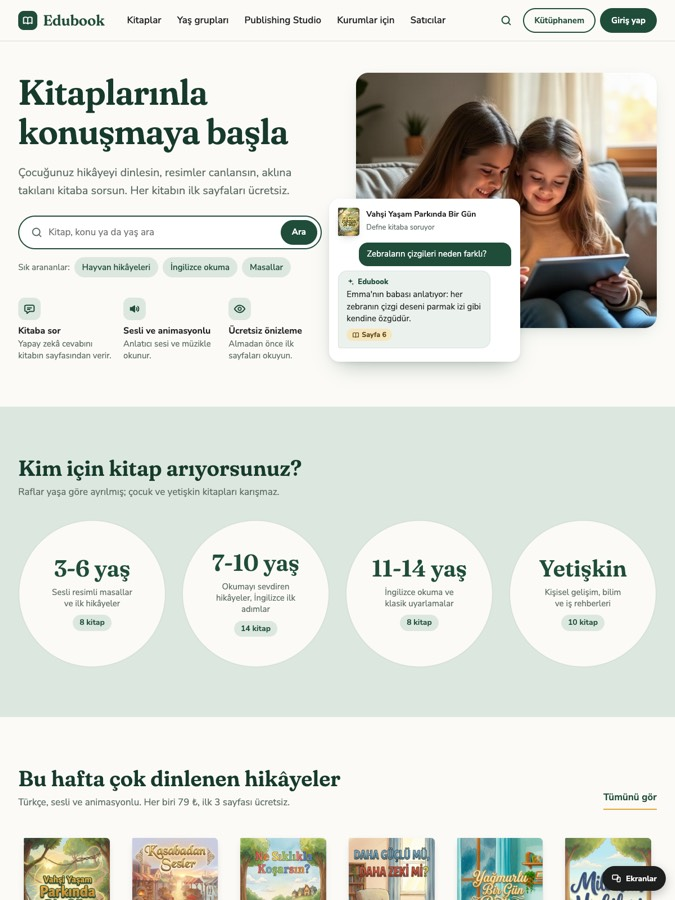

Seçenek 1Masal Kütüphanesi
Sıcak, sakin ve güven veren bir görünüm; kapaklar bir kütüphane rafında duruyor. Ana sayfa doğrudan "Kitaplarınla konuşmaya başla" diyor ve kitaba sorulan bir soruyu cevabıyla gösteriyor. Veli, kitapları yaşa göre dört büyük karttan buluyor; her kartta "Sesli" rozeti ve "Kitaba sor" düğmesi var.
Seçenek 1'i incele